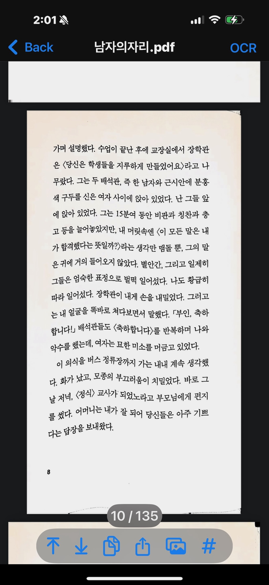
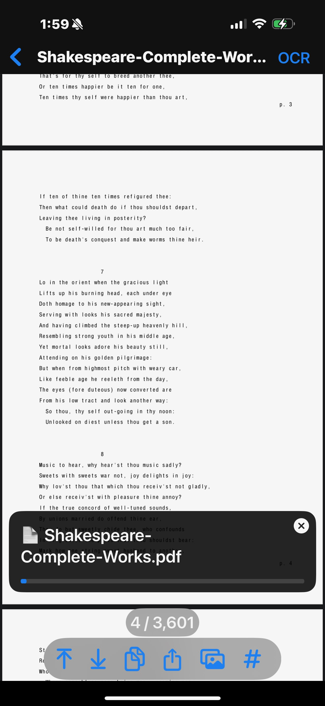
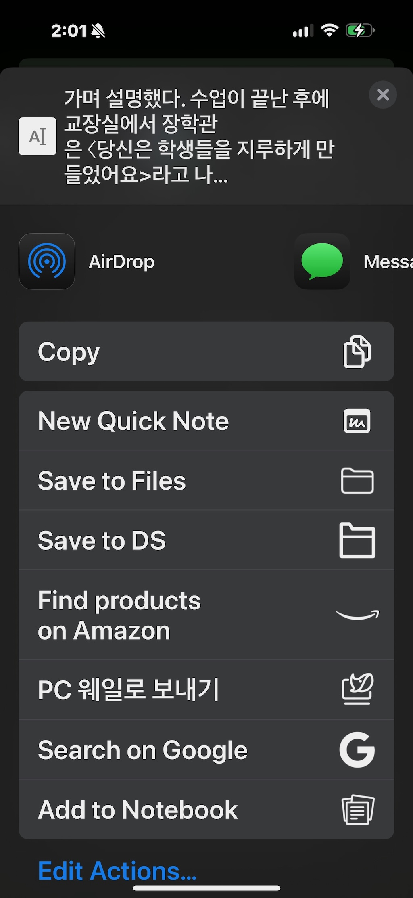
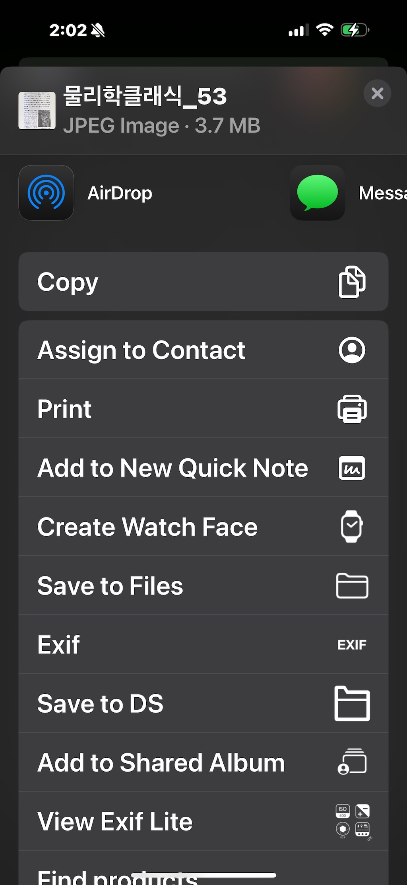
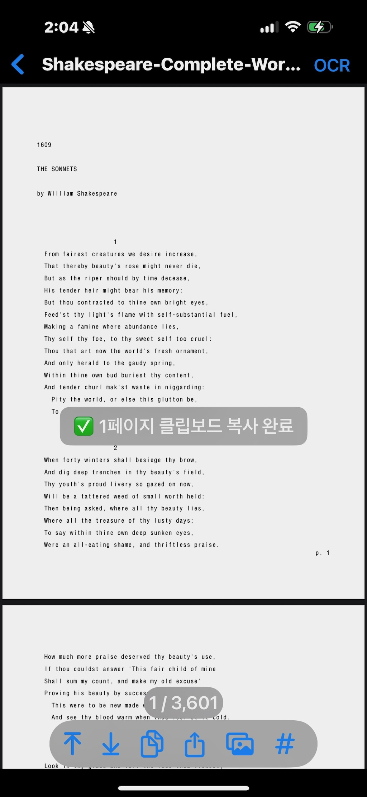

앱 소개
Texcan은 스캔된 PDF 문서를 AI 기반 OCR 기술로 빠르게 텍스트로 변환하고,
강력한 검색 기능으로 필요한 내용을 쉽게 찾아볼 수 있는 스마트 PDF 도구입니다.
제이앱스(J-Apps)는 혁신적인 모바일 솔루션을 제공하며,
업무 효율성을 극대화하는 AI 앱을 만듭니다.
주요 기능
- 이미지 기반 PDF를 기기에서 바로 텍스트로 변환 (OCR)
- OCR된 문장을 기반으로 빠른 검색 기능 제공
- 안전한 로컬 처리 – 네트워크 전송 없음
- 오프라인으로 데이터 요금 절감
- 전체 PDF 또는 특정 페이지 단위 변환 지원
- 변환된 텍스트를 TXT 또는 이미지로 손쉽게 공유
앱 스크린샷 및 기능 설명

정확한 OCR
구불구불한 페이지도 문제없이 OCR 처리하여 텍스트로 변환합니다.

전체 문서 OCR
PDF 전체 페이지를 빠르게 OCR하여 TXT 파일로 저장할 수 있습니다.

부분 OCR 및 공유
현재 페이지만 OCR하여 텍스트를 추출하고 바로 공유할 수 있습니다.

이미지로 공유
현재 페이지를 이미지로 변환하여 빠르게 공유할 수 있습니다.

클립보드 저장
변환된 텍스트를 일반 클립보드에 복사하여 다른 앱에서 쉽게 붙여넣을 수 있습니다.
AI 요약 (베타)
곧 출시될 AI 기능으로, 긴 PDF 내용을 핵심만 자동 요약하여 빠르게 내용을 파악할 수 있습니다.